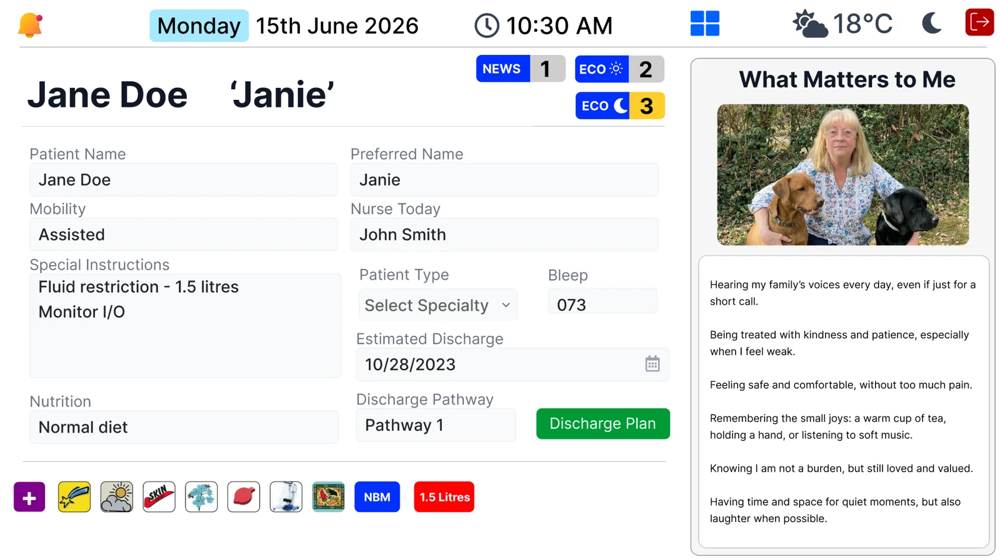

Clarity at a glance
A consistent, legible layout gives useful bedside information a clear home, without fading marker or smudged handwriting.
Bedbord by TruSelv
Replace the handwritten whiteboard with a digital bedside display that makes important information easier to see, and the person easier to know.
See what this could look like in your care setting.
Book a demoFrom a task to a useful conversation
A whiteboard is only useful when it is readable and up to date. Bedbord gives teams a different way to approach that daily work.
A consistent, legible layout gives useful bedside information a clear home, without fading marker or smudged handwriting.
Explore how digital updates could reduce time spent erasing and rewriting boards. Measure the difference in your own setting.
Make space for preferences, interests and “what matters to me”, alongside agreed bedside information.
Reduce reliance on board markers and paper labels. Assess this alongside device energy, hardware life and disposal.
A practical comparison
| At the bedside | Traditional whiteboard | With Bedbord |
|---|---|---|
| Readability | Depends on handwriting, marker condition and available space. | A consistent digital layout with clear text and structured sections. |
| Updating information | Erase, rewrite and check each board. | Digital updates; connected workflows subject to local integration and validation. |
| Knowing the person | Limited space for interests and preferences. | Dedicated room for what matters to the person. |
| Materials & upkeep | Markers, board erasers and replacement labels. | Less need for writing consumables; the display still needs approved cleaning. |
| Operational needs | Works without power or a network. | Requires power, appropriate connectivity and an agreed downtime process. |
| Information safety | Manual checks and local privacy practices. | Agreed visibility, update responsibilities and checks for stale or incorrect information. |
A digital display supports communication. Staff must still verify identity and clinical information using the organisation’s approved records and procedures.
What matters to me
“Please call me Janie.”
“I love being in my garden.”
Small details can open the door to more personal care. Bedbord makes room for preferences and familiar interests so the person is present in the conversation.
Display only information agreed with the person and care team. Photos and personal details need appropriate permission and visibility controls.

Illustrative interface. Configuration and available features are confirmed during discovery.
Make a measured decision
Use your own bed count and daily board-maintenance time to estimate hours that could be released. Add staffing costs and a supplier quote to explore a first-year business case.
Count only avoidable erasing and rewriting. Device cleaning and clinical verification remain part of safe care.
Explore the time & ROI calculatorAn illustrative starting point
per year if a 24-bed ward saves 5 minutes per occupied bed, per day, at 100% occupancy.
24 × 5 × 365 ÷ 60. An example calculation, not a measured TruSelv result or a promise of savings.
From discovery to a considered pilot
Look at how your team updates boards today, who uses the information and where the friction is.
Review information governance, display placement, clinical safety, cleaning and downtime arrangements.
Agree a small pilot, train the team and compare readability, maintenance time and user feedback.
Good questions
Integration depends on your records system, available interfaces and local approvals. Discovery establishes what can be connected and how data will be validated. We do not promise universal plug-and-play integration.
Yes. The display and any touch surfaces still need cleaning using the approved device instructions and your infection prevention policy. The time calculator concerns avoidable board writing and erasing, not essential hygiene.
No. Bedbord is a communication display. Use your approved clinical record, patient identity checks and local escalation procedures for clinical decisions.
Agree a local fallback before use. Staff need to know when information is unavailable or stale and return to approved records and communication processes. Ask for the release-specific downtime behaviour during assessment.
We quote for your setting, device requirements, installation, software and any integration. Book a demonstration to start a scoped conversation.
A conversation is a good start
Tell us about your ward, care home or care organisation.